Практика · журнал «ДентАрт» 2013 №1 (70)
Клінічний досвід застосування біоактивного цементу Біодентин
THE CLINICAL EXPERIENCE OF USING BIOACTIVE CEMENT BIODENTIN
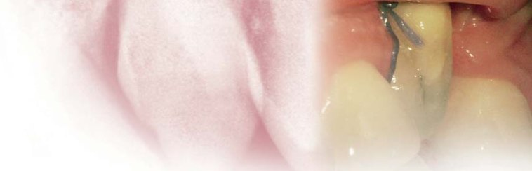
У наші дні стоматологія розвивається вельми стрімко, така ж сама тенденція спостерігається і в ендодонтії. Механічні системи з ендодонтичними нікель-титановими інструментами, хірургічні мікроскопи, ендодонтичні ультразвукові наконечники, сучасні техніки обтурації кореневих каналів, а також апікальна мікрохірургія — це далеко не весь спектр можливостей, які сьогодні є в арсеналі ендодонтистів. Розроблено важливі рекомендації щодо проведення терапевтичних заходів при ускладненнях після ендодонтичного лікування, різні методи збереження вітальності пульпи.
Гідроксид кальцію, який уперше впровадив у стоматологію наприкінці XIX століття Германн, усе ще займає провідну позицію. Недоліками гідроксиду кальцію є усадка, складне внесення і негерметичність пломбування. Матеріал ПроРут МТА (Майлліфер) став значним прогресом у справі ефективного лікування ендодонтичних ускладнень, особливо у разі перфорації кореня зуба, при лікуванні постійних недорозвинених зубів або зубів з резорбцією. Однак у цього матеріалу є проблеми, пов'язані з його консистенцією і технікою роботи: незручність внесення матеріалу, забарвлювання зуба, негарантований результат після покриття пульпи. Саме тому стоматологічна спільнота виявила дуже великий інтерес до можливості використання біоактивного матеріалу Біодентин (Септодонт).
Біодентин складається з порошку і рідини. Основою порошку є трикальцій силікат; він змішується з рідиною, в основі якої — водний розчин хлориду кальцію. Інтерес до Біодентину зумовлений його механічними характеристиками, схожими з тими, які має природний дентин, а також надійним склеюванням з дентином і герметичністю реставрацій у маргінальній зоні.
Актуальні показання до застосування матеріалу
У зоні коронки зуба:
- тимчасова заміна емалі зуба;
- постійна заміна дентину;
- застосування в порожнинах за глибокого карієсу при сендвіч-техніці;
- лікування глибокого пришийкового і радикулярного ушкодження;
- покриття пульпи після ушкодження;
- пульпотомія.
У зоні кореня зуба:
- лікування перфорацій кореня;
- лікування перфорацій у зоні фуркації;
- лікування перфораційних внутрішніх резорбцій;
- відновлення цілісності в результаті зовнішніх резорбцій;
- апексифікація;
- ретроградне пломбування кореневих каналів (під час хірургічного втручання в зоні апексу).
Біодентин не рекомендується використовувати у таких випадках:
- відновлення великої частини втраченої структури зуба;
- відновлення в естетично значущій зоні зубного ряду;
- лікування зубів з безповоротним пульпітом.
Біодентин надходить у капсулах; до упаковки додається детальна інструкція від виробника з техніки приготування. Матеріал рентгеноконтрастний. Процедура замішування матеріалу: рідина додається після відкривання капсули краплями у порошок, після закривання капсули матеріал змішується механічно в апараті для змішування приблизно 30 секунд на швидкості близько 4200 обертів за хвилину. Біодентин вносять у порожнину традиційним ручним інструментом; також можна використати пістолет для внесення амальгами. Необхідно уникати додавання надмірної кількості рідини, оскільки це призведе до занадто текучої консистенції кінцевого матеріалу, що у свою чергу подовжить час його застигання. Правильно замішаний матеріал має бути схожим за консистенцією на крем. Виробник рекомендує працювати в сухому операційному полі, під рабердамом. Але в деяких випадках немає необхідності використовувати рабердам (наприклад, у випадках хірургічних втручань в зоні апексу, у випадках роботи на верхній щелепі). І все ж відносно суха і чиста робоча зона є необхідною умовою.
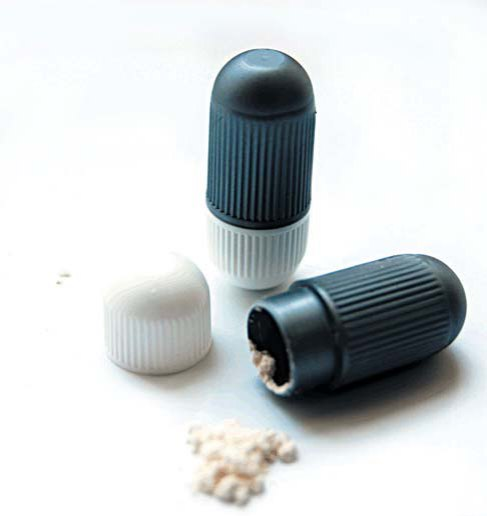
Клінічний випадок резорбції кореня
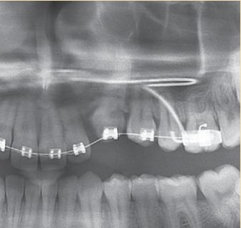
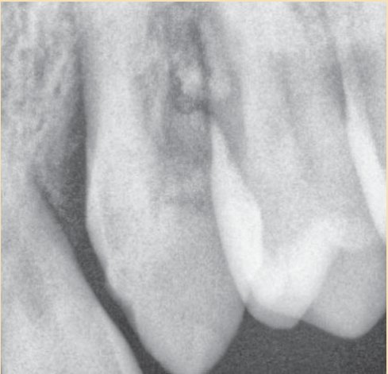
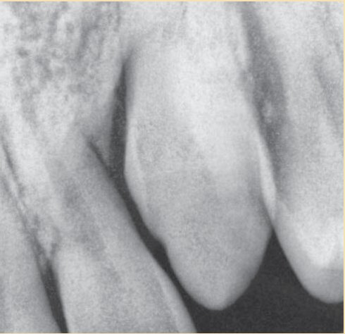
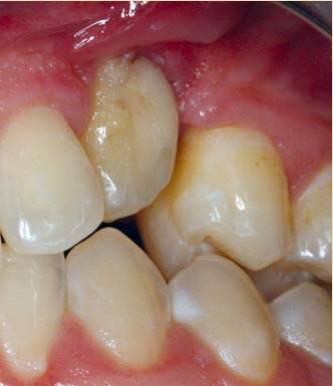
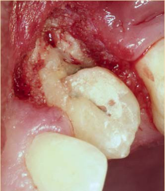
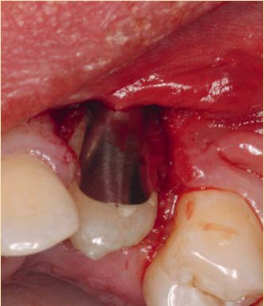
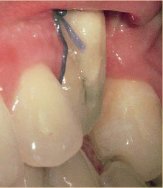
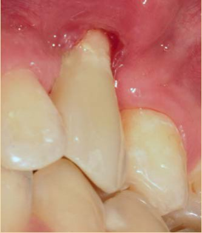
Біодентин був використаний у випадку зовнішньої резорбції, яка заторкнула коронарну частину кореневого каналу і поширилася на пульпу. Ураженим зубом виявилося анкілозне верхнє ікло після невдалого ортодонтичного лікування. Слизово-надкістний клапоть був відшарований, і в порожнину резорбції внесено Біодентин; протягом усього часу застигання матеріал був захищений матрицею Ультрадент. Потім поверхня була покрита шаром захисного матеріалу ДжіКоат (ДжіСі). Після процедури лікування для корекції форми і розташування зуб покрили композитним непрямим вініром з Хромасит (Івоклар Вівадент). Упродовж двох подальших місяців від пацієнта скарг не було.
Клінічні випадки лікування перфорацій
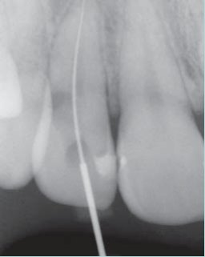
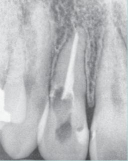
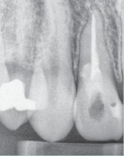
Біодентин був використаний у чотирьох випадках лікування перфорацій. Два випадки перфорації були в коронарній третині кореня — у верхньому латеральному різці і першому верхньому премолярі. У кожному окремому випадку кореневий канал препарувався і обтурувався, а потім пломбувався за допомогою спредера і плагера. З часу лікування минуло понад 4 місяці; від пацієнтів скарг не було, зуби не змінювалися в кольорі. Біодентин також використовувався для постійного закриття перфорації в зоні фуркації. Лікування проводилося у двох пацієнтів, нині минуло 2 і 4 місяці з моменту лікування. Ускладнень лікування не виявлено.
Клінічний випадок лікування глибокого карієсу
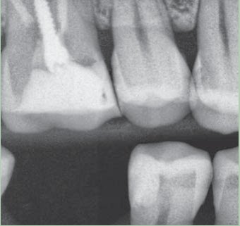
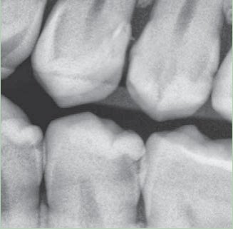
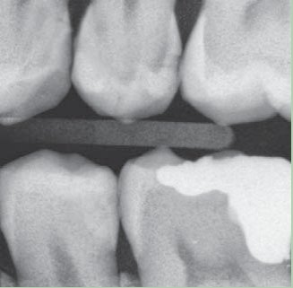
Біодентин використовувався для прямого покриття пульпи зуба у трьох клінічних випадках. Після внесення матеріалу рекомендується зробити контрольний рентгенівський знімок. Найкоротший термін спостереження становив 1 місяць, а найтриваліший — 5 місяців. З клінічного боку ускладнень не спостерігалося, матеріал залишився у місці внесення, скарг від пацієнта не було, а в одному випадку Біодентин був покритий композитним матеріалом.
Висновки і практичні рекомендації
Біодентин — багатообіцяючий матеріал для лікування складних випадків в ендодонтичній практиці. Порівняно з МТА Біодентин простіший у роботі, після використання цього матеріалу не виникає дисколорирування коронки зуба, матеріал тривалий час (до 6 місяців) може слугувати тимчасовою пломбою і надалі може бути перекритий композитом.